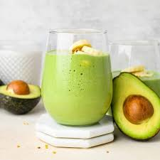

Avocados are delicious fruits that function as a healthy fat, packed with nearly 20 different vitamins and minerals. People who regularly eat avocados have higher intakes of fiber, vitamins E and K, magnesium, and potassium than people who don't eat them. You can add avocados to sandwiches, tacos, or on top of toast.
Avocados are a source of vitamins C, E, K, and B6, as well as riboflavin, niacin, folate, pantothenic acid, magnesium, and potassium. They also provide lutein, beta carotene, and omega-3 fatty acids. Avocados contain high levels of healthy, beneficial fats, which can help a person feel fuller between meals.
Benefits
A diet that contains a variety of fruits and vegetables can provide numerous health benefitsTrusted Source. It may, for example, reduce the risk of obesity, diabetes, heart disease, and overall mortality while promoting a healthy complexion and hair, increased energy, and weight moderation.
Here are 11 reasons why avocados can contribute to a healthy diet:
(1). Healthy for the heart
In every 100 g of avocado, there are 76 milligramsTrusted Source (mg) of a natural plant sterol called beta-sitosterol. Regularly consuming beta-sitosterol and other plant sterols may help maintain healthy cholesterol levels, which are important for heart health.
(2). Great for vision
Avocados contain lutein and zeaxanthinTrusted Source, two phytochemicals present in eye tissue. They provide antioxidant protection to help minimize damage, including from UV light.
The monounsaturated fatty acids in avocados also support the absorption of other beneficial fat-soluble antioxidants, such as beta carotene. As a result, adding avocados to the diet may help reduce the risk of developing age-related macular degeneration.
(3). May help prevent osteoporosis
Half an avocado provides approximately 18%Trusted Source of the daily value of vitamin K.
This nutrient is often overlooked but is essential for bone health. Taking in enough vitamin K can support bone health by increasing calcium absorption and reducing the urinary excretion of calcium.
(4). Components may prevent cancer
Studies have not yet assessed a direct link between avocado consumption and a reduction in cancer risk. However, avocados do contain compounds that may help prevent the onset of some cancers.
ResearchTrusted Source has associated an optimal intake of folate with a reduced risk of developing colon, stomach, pancreatic, and cervical cancers. However, the mechanism behind this association remains unclear. Half of an avocado contains roughly 81 mcgTrusted Source of folate, 20% of the daily value.
Avocados also contain high levels of phytochemicals and carotenoids, which may have anticancer properties. StudiesTrusted Source have shown that carotenoids, specifically, may protect against cancer progression.
A 2023 studyTrusted Source discovered that more than one weekly serving of avocado was associated with a decreased risk of colorectal, lung, and bladder cancer. However, researchers did not observe associations between avocado consumption and the risk of total cancer or other site-specific cancers. Further research is necessary to confirm these associations.
(5). Supporting fetal health
Folate is important for a healthy pregnancy. Adequate intake reduces the risk of miscarriage and neural tube abnormalities. A person should consume at least 600 micrograms (mcg)Trusted Source of folate per day when pregnant. One avocado may contain as much as 160 mcgTrusted Source.
Avocados also contain fatty acids that are integralTrusted Source to a healthy diet and fetal development.
(6). Reducing depression risk
Avocados are a good source of folateTrusted Source, which plays an important role in overall dietary health. Studies have also found links between low folate levels and depression.
Folate helps prevent the buildup of homocysteine, a substance that can impair circulation and delivery of nutrients to the brain. Reviews of past researchTrusted Source have linked excess homocysteine with cognitive dysfunction, depression, and the production of serotonin, dopamine, and norepinephrine, which regulate mood, sleep, and appetite.
(7). Improving digestion
Avocados are high in fiber, containing approximately 6–7 gTrusted Source per half fruit.
Eating foods with natural fiber can helpTrusted Source prevent constipation, maintain digestive tract health, and lower the risk of colon cancer.
(8). Natural detoxification
Adequate fiber promotes regular bowel movements, which are crucial for the excretion of toxins through the bile and stool.
StudiesTrusted Source have shown that dietary fiber also promotes good gut health and microbial diversity. This helps the body maintain a healthy bacterial balance. This can reduce inflammation and aggravation of the digestive tract.
(9). Osteoarthritis relief
Avocados, soy, and some other plant foods contain saponins. These substances may have a positive effect on knee and hip osteoarthritis symptoms. However, researchers have not yet confirmed the long-term effects of saponins in people with osteoarthritis.
(10). Antimicrobial action
Avocados and avocado oil contain substances that have antimicrobial properties. Research shows that avocado seed extracts can help defend the body against both Streptococcus agalactiae and Staphylococcus aureus infections, for example.
(11). Protection from chronic disease
The monounsaturated fatty acids in avocados may beTrusted Source beneficial in preventing chronic conditions, such as cardiovascular disease.
This all started from a jolly simply girl who has so much love in any form of product that was made from avocado! She was a wholesome lover of any product such as in form of beverage like shakes, smoothie, juice, powdered, frappe and even coffe that has avocado bits!
Since avocado has a lot to do with our health that makes us healthy and stronger with its benefits itself!This ordering site started in just one menu which is the Lyne's Cado Best Seller Shake! Until it has became a trend, Lyn'e Cado Bevarages has been know for all about the Cado staff and it stareted to add new menus, such as smoothie, juice and even in powdered form!
Since it was not all about avovado by this time! They started to add any frui8ts that you can choose for your own toppings together with its form op pastries and breads too!
Lyne's Cado Beverages
"Best in town! Try it now!"